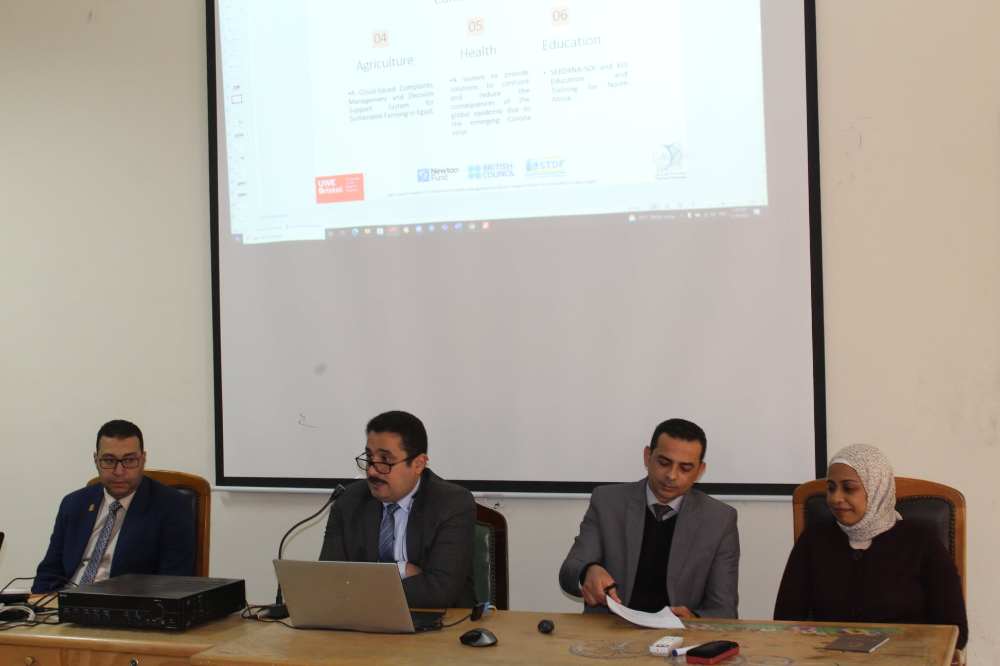
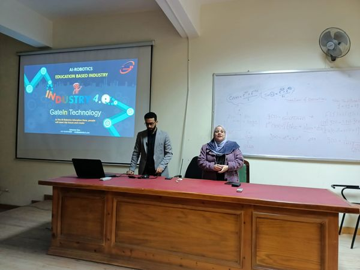
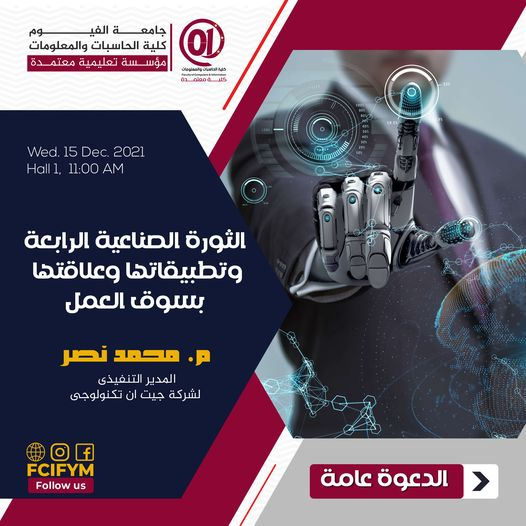

|  |
| في اطار المشروع المشترك " نظام مبني على الحوسبه السحابيه لإدارة مشاكل المزارعين ودعم القرارمن أجل الزراعه المستدامه في مصر" بين كلية الحاسبات والمعلومات جامعة الفيوم وجامعة غرب انجلترا UWE قام الفريق المصري بعمل ورشة عمل يوم الخميس 16-12-2021 لعرض ما تم انجازه فالمشروع المشترك بمشاركة الفريق الانجليزي اون لاين. وبوجود خبراء من مركز البحوث الزراعية متمثلا في الاستاذ الدكتور /مريم حزمان مدير قسم النظم الخبيرة بمركز معلومات التقديرات المناخية والنظم الخبيرة ، والاستاذ الدكتور / محمد قاسم رئيس البحوث بمعهد بحوث الارشاد الزراعى والتنمية الريفية. بدات الورشة بتعريف للمشروع واهدافه ثم قام الفريق المصري متمثلا في الاستاذ الدكتور / محمد خفاجي مدير المشروع ومدير المدرسة البحثية للبيانات الكبيرة ، والدكتور مصطفى المصري ، والدكتورة رشا البدري والمهندسة رحاب فاروق بعرض ما تم انجازة فالمشروع. ثم قام الفريق الانجليزي بعرض المهام التي تم انجازها من قبل الفريق. واخيرا قام الخبراء من مركز البحوث الزراعية بالتعليق على مخرجات المشروع وعرض مقترحاتهم. يذكر ان المشروع والممول من صندوق العلوم والتكنولوجيا STDF وبدعم من British Council يخدم الفلاحين المصريين في حل المشاكل المتعلقه بالمحاصيل بطريقة آنية طبقا للمشاكل التي تم حلها من قبل خبراء زراعيين. |
|  |
| تحت رعاية الاستاذ الدكتور/ محمد خفاجى - عميد الكلية ، وإشراف الاستاذ الدكتور/ سميه السيد - وكيل الكلية لشئون خدمة المجتمع وتنمية البيئة ، نظم قطاع خدمة المجتمع وتنمية البيئة ورشة عمل عن الثورة الصناعية وربطها بسوق العمل . وفى اطار خطة الكلية لربط الطلاب بسوق العمل و بالتعاون مع شركة جيت ان تكنولجى نظمت الكلية الندوة التى حاضر فيها المهندس محمد نصر - مدير شركة جيت ان تكنولوجى - وذلك للتوعية حول اخر ما وصل إليه سوق العمل فى مجال الذكاء الاصطناعى وانترنت الاشياء وأكد سعادته بمستوى طلاب الكلية وسعيهم على المشاركة فى الندوات والمتابعة. وصرح الاستاذ الدكتور/ محمد حفاجى عميد الكلية ان الكلية تسعى دوما لربط الطلاب بكل ما هو جديد بسوق العمل لافتا الى أن الكلية وقعت برتكول تعاون مع الشركة لتدريب الطلاب وتوفير فرص لتدريبهم ودعم مشروعات التخرج . فيما أكدت أ.د/ سمية السيد جودة وكيل الكلية لشئون خدمة المجتمع وتنمية البيئة ان كلية الحاسبات ستظل على أولوية أنشتطها المشاركة فى تجهيز الطلاب بسوق العمل والمشاركة فى خطة الدولة فى التحول الرقمى من خلال خريجى الكلية. وانتهت الندوة فى تمام الساعه الثانية ظهرا |
|  |
| تحت إشراف السيد الاستاذ الدكتور/ محمد خفاجى - عميد الكلية ، ينظم قطاع خدمة المجتمع برئاسة الاستاذ الدكتور / سمية السيد - وكيل الكلية لشئون خدمة المجتمع وتنمية البيئة ، ورشة عمل عن الثورة الصناعية الرابعة وتطبيقاتها وعلاقتها بسوق العمل ، وذلك غدا الاربعاء الموافق 15/12/2021 فى تمام الساعة 11 صباحا بمدرج 1 بالكلية |